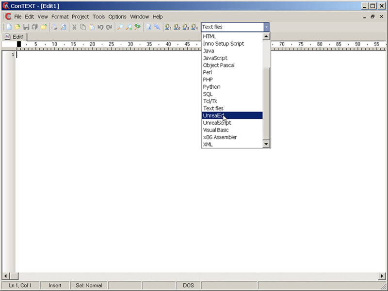
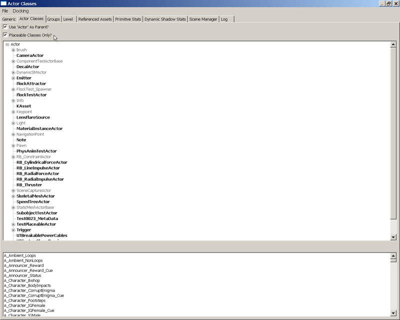
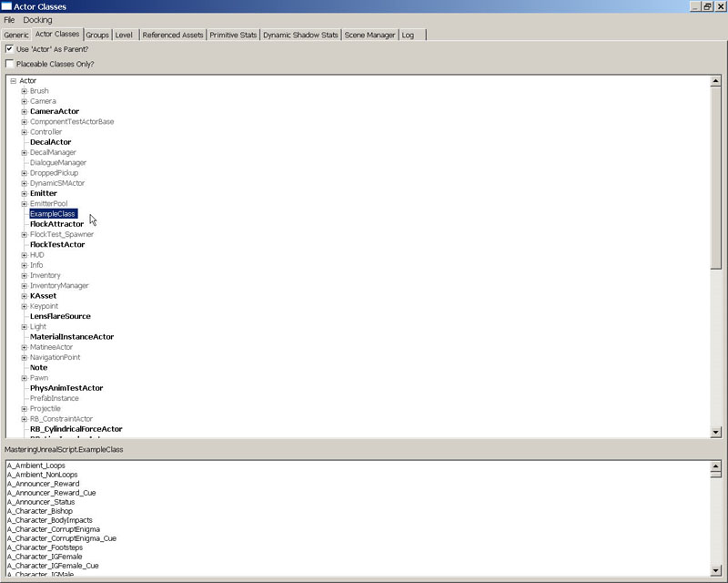
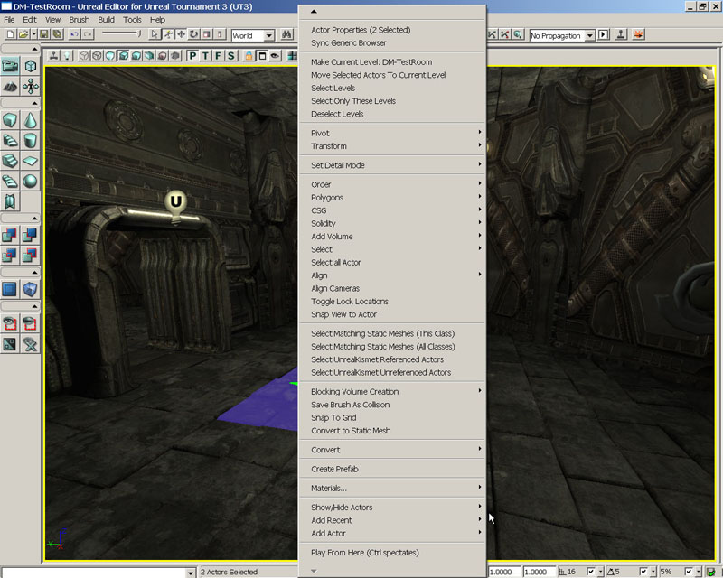
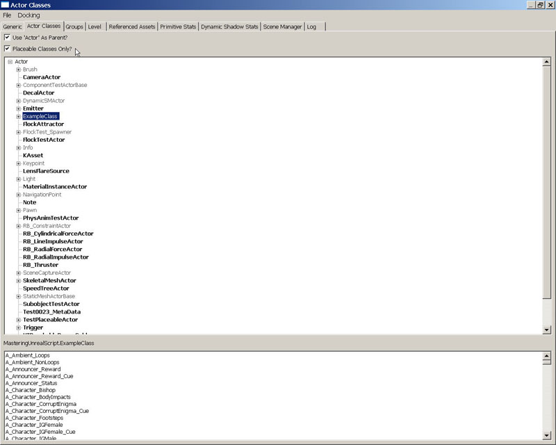
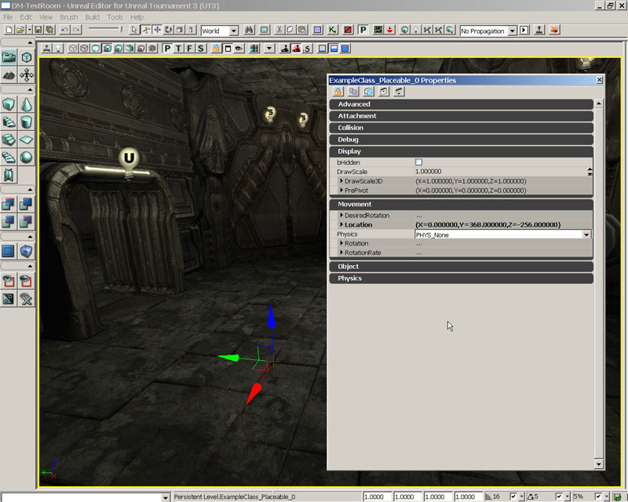
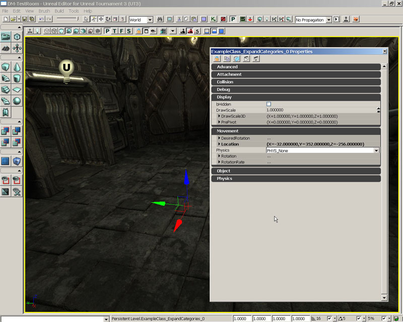

UDN
Search public documentation:
MasteringUnrealScriptClassesKR
English Translation
日本語訳
中国翻译
Interested in the Unreal Engine?
Visit the Unreal Technology site.
Looking for jobs and company info?
Check out the Epic games site.
Questions about support via UDN?
Contact the UDN Staff
日本語訳
中国翻译
Interested in the Unreal Engine?
Visit the Unreal Technology site.
Looking for jobs and company info?
Check out the Epic games site.
Questions about support via UDN?
Contact the UDN Staff
제 3 장 UNREAL 내의 클래스
언어에 취해 괘 걸리기에 즈음해, UnrealScript 내의 클래스의 실장을 보고 갑니다.보다 구체적으로는, UnrealScript 내의 클래스가 나타내는 것의 개요나, 특정의 클래스가 어떻게 취급될까를 결정하기 위해, 클래스를 선언할 때에 사용할 수 있는 여러가지 키워드의 설명을 수반한 클래스 선언의 방법을 기재해 갈 것입니다.3.1 개요
클래스는, 기본적으로는, 그러한 프롭퍼티, 능력 및 동작을 계승하는 새로운 클래스를 작성하기 위해서 확장되는지, 그러한 프롭퍼티에 대해서 자신의 고유의 값을 각각 가져, 서로의 인스턴스로 독립해 동작하는 게임내에서 이용하는 오브젝트를 생성하기 위해서 인스턴스화 되는 것이 가능한, 프롭퍼티, 능력 및 동작의 조를 지정하는 템플릿입니다.이것은 Unreal 및 UnrealScript 에 관해서 어떠한 의미가 있는 것입니까?기본적으로, UnrealScript 로 생성된 개개의 클래스는, 게임 중(안)에서 사용하기 위해서 오브젝트의 생성에 사용될 가능성이 있는 게임 아이템의 타입이 됩니다.이것은, 곧바로 식별이 가능하고 플레이어의 눈에 닿는 아이템으로부터, 무대뒤의 지원자로서 다른 아이템으로부터 분별없게 사용되지 않는 아이템까지의 범위가 될 가능성이 있습니다.예로서는, 무기와 탈 것, 또는, 네트워크 경유로 복사하는 목적 때문에, 플레이어의 중요한 프롭퍼티의 값을 보관 유지하기 위해서 사용되는 PlayerReplicationInfo 등이 있습니다.3.2 native대 NON-NATIVE
가장 기본적인 레벨에서는, UnrealScript 의 클래스에는 2 개의 형태가 있는 : native 및 non-native입니다. native 클래스는, 단지 native 코드 또는, 엔진의 native 언어 (이 경우는 C++ 가 됩니다)로 기술된 코드를 가지는 클래스입니다. native 클래스는, UnrealScript 로 기술된 코드도 전혀 사용하지 않는 것이 아닙니다, 관련하는 C++ 코드를 가지고 있을 뿐입니다.게임내에 존재하는 저레벨 클래스의 상당수는, 꽤 복잡한 기능을 가져 native 코드의 속도 성능이 도움이 되기 위해, native 클래스입니다.NON-NATIVE 클래스는, UnrealScript 내에서 한정적으로 기술됩니다.모든 클래스는 native 클래스의 Object(오브젝트)로부터의 확장을 최소한으로 하지 않으면 안됩니다, 그런데도, 계승을 통해서 관련한 native 코드를 가집니다.그러나, 자신의 native 코드라고 하는 구별은 없습니다. native 클래스의 작성을 실시하면 엔진의 원시 코드의 리비르드가 필요하기 때문에, 기술하는 모든 클래스는, NON-NATIVE 가 되겠지요.3.3 클래스 선언
UnrealScript 내에 새로운 클래스를 작성하기 위해서, 클래스 선언을 포함한 새로운 UnrealScript 파일을 작성하지 않으면 안됩니다.개개의 UnrealScript 파일에는, 1 개의 클래스 선언만을 포함할 수 있어 그 때문에, Unreal 내에서는, 단일의 클래스를 나타냅니다.클래스 선언은, 스크립트의 최초의 행에 있어, 그런데도 최소한의 내용으로서 작성하는 클래스의 이름과 확장원의 클래스, 또는 친클래스의 이름이 기술되고 있습니다.선언에는, 다음의 섹션내에서 설명되는 1 이상의 키워드 또는 Class Specifier 도 기술할 수 있습니다.이하는 클래스 선언의 일반적인 형식입니다 :class ClassName extends ParentClassName;이것을 템플릿으로서 사용하고, 이하와 같이 기저의 Vehicle 클래스로부터의 기능을 계승하는 PickupTruck 라는 이름의 새로운 vihicle(비클) 클래스를 선언할 수 있습니다 :
class PickupTruck extends Vehicle;주기 : 클래스의 이름과 그것을 포함한 UnrealScript(.uc) 파일의 이름은, 동일하지 않으면 안됩니다.그렇지 않으면 컴파일 처리가 실패하므로 유의가 중요합니다.
EXTENDS 키워드
상기의 클래스 선언의 예로, Extends 키워드가 사용되고 있을 생각(들)물어진 것이지요.이 키워드는 기본적으로는 "으로부터의 계승" 을 의미합니다.모든 클래스는 다른 클래스로부터 확장, 또는 계승되지 않으면 안됩니다.이것에 관한 유일한 예외는, Object 클래스에서, UnrealScript 내의 다른 모든 클래스의 base class이기 (위해)때문입니다. 1 개의 클래스가 다른 클래스로부터 계승될 때는, 계승원의 클래스의 변수, 함수, 상태등을 모두 포함합니다. UnrealScript 내에서 클래스를 작성할 때는, 통상 Actor 또는, 그 서브 클래스의 1 개로부터, 확장을 실시합니다만, 독립했을 경우에는, Object 로부터 확장하는 것도 가능합니다.튜토리얼 3.1 첫 클래스 선언
본장의 튜토리얼은, 클래스 선언을 기술할 뿐(만큼)이므로 꽤 단순하게 됩니다.클래스를 생성해, 이러한 선언이 클래스의 외관과 동작에 어떻게 영향을 줄까에 집중하고 있기 때문에, 이러한 클래스는, 이 시점에서는, 실제로는 아무것도 실시하지 않습니다.이 최초의 튜토리얼에서는, Actor 클래스로부터 확장된 클래스를 작성합니다. 1 도 작성하면, 신규의 스크립트를 컴파일 해, 그리고, 신규 클래스가 엔진에 의해서 인식되어 Actor Classes Browser 내에 표시되는 것을 확인하기 위해서 UnrealEd 를 오픈해 주세요. 1. 아직 오픈하고 있지 않으면, ConTEXT 를 오픈해 주세요. 2. File 메뉴로부터 New 를 선택하는지, 툴바내의 [New File] 버튼을 눌러 신규 파일을 작성해 주세요.
그림 3.1 New File 버튼. 3. Select Active Highlighter 드롭 다운을 사용하고, 인스톨 끝난 UnrealScript 하이 라이터를 선택해 주세요.

그림 3.2 Select Active Highlighter 드롭 다운 메뉴. 4. 신규 스크립트 파일의 1 행 째에, 이하의 텍스트를 입력해 주세요 :
class ExampleClass extends actor;확실히 이것입니다 ! 이것으로, 클래스의 선언은 완료해, 완전히 새로운 클래스의 생성이 기술적으로는 완성했습니다. 5. 이전의 장으로 작성했다 ..\Src\MasteringUnrealScript\Classes 디렉토리내에 파일을 보존해 주세요. 신규 스크립트 파일 ExampleClass.uc 는 신규 클래스의 이름에 맞추고 이름을 붙여 주세요. 6. 스크립트를 컴파일 하기 위해서 Make 커멘드 렛을 실행해 주세요.이전의 장과 같게, 이 방법은 선택해 실시가 가능합니다.스크립트가 문제 없고 컴파일 되면, UnrealEd 를 기동해 주세요. 7. 만약, 아직 오픈하고 있지 않으면, Generic Browser 를 오픈해, Actor Classes 탭으로 전환해 주세요. ExampleClass 은, 클래스 계층 트리내에 일람표 나타나지 않은 것에 주의해 주세요.이것은, Placeable Classes Only? 옵션의 타글이 온이 되어 있고, ExampleClass 클래스가 배치 가능 (placeable)으로 없기 때문입니다.

그림 3.3 Placeable Classes Only? 옵션이 체크되고 있습니다. Uncheck the Placeable Classes Only? 옵션의 체크를 제외해 주세요, 그러면, 계층 리스트내에 신규의 ExampleClass 클래스가 표시되는 것에 눈치채겠지요.

그림 3.4 옵션의 체크가 떼어지면 ExampleClass 클래스는, 계층내에 표시됩니다. 8. 맵내에서 ExampleClass 클래스의 인스턴스의 배치를 하려고 하고 있는 것이 볼 수 있습니다. DVD 상에서 제공된 DM_TestRoom.ut3 맵을 오픈해 주세요. Actor Classes Browser 내의 ExampleClass 를 선택하고, Perspective 뷰포트내의 방의 플로어상에서 오른쪽 클릭해 주세요.이 클래스가 배치 가능한 경우는, context menu에 Add ExampleClass here 에 대한 옵션이 있습니다. 이 클래스는 배치 가능하지는 않아요로, 이 옵션이 존재하지 않는 것이 명확하게 압니다.

그림 3.5 ExampleClass 클래스의 인스턴스를 추가하기 위한 옵션은 없습니다. Unreal 클래스 계층의 클래스의 일부를 선언하는 방법을 봐 왔습니다.이 클래스는, 기본적으로 Actor 클래스의 카피 이상의 것은 아니고, 맵내에 배치할 수 없습니다.다음의 튜토리얼에서는, 매우 기본적입니다만, Unreal Engine 내의 매우 중요한 스크립팅의 개념인, 레벨내의 배치가 가능한 클래스를 생성하기 위해(때문에), 여기서 배운 것을 확장해 갈 것입니다.맵내에 아이템을 둘 수 없으면 디자이너의 일은 기본적으로 불가능하게 되겠지요. <<<< 튜토리얼의 종료 >>>>
3.4 CLASS SPECIFIERS(클래스 지정자)
Class Specifiers(클래스 지정자)는, 컴파일러 또는 엔진 자신에게 클래스에 대해서, 어느 특징을 지정하는 키워드입니다.이러한 키워드의 각각 붙고, 이하에 설명합니다 :NATIVE(PACKAGENAME)
Native 지정자는 거기에 관련하는 native 코드를 가지는 클래스에 라벨을 붙입니다.이것은, 엔진이 클래스의 C++ 의 선언 및 실장을 검색하는 것을 의미합니다.이 지정이 존재하지 않으면, 에러가 발생합니다. native 클래스는, native 함수를 선언해, native 인터페이스를 실장할 수 있는 클래스의 존재를 식별한다, 단지 하나의 방법입니다.현시점에 있고, 함수나 인터페이스에 대해 다루지 않기 때문에 잘 이해할 수 없을지도 모릅니다만, 이것들은 후를 잘 안게 설명해 갈 것입니다. (PackageName)(은)는, 클래스가 존재하는 패키지의 이름을 참조합니다.컴파일러는 PackageName +Classes.h 라는 이름을 가지는 C++ 헤더 파일 중의 클래스에 대한 선언을 자동 생성하기 위해서 이 이름을 사용합니다.즉, 만약, Package 명이 이하와 같이 지정되면 :Class NativeClass extends Actor Native(MasteringUnreal);이 클래스의 native 선언은, MasteringUnrealClasses.h 파일의 내부에 놓여집니다.
NATIVEREPLICATION
NativeReplication 지정자는 native 클래스안만으로 의미를 가져, 클래스에 속하는 변수의 값이 native 코드 경유로 복사되는 것을 나타냅니다.DEPENDSON(CLASSNAME[,CLASSNAME,...])
DependsOn 지정자는, 동일 패키지내의 복수의 클래스에서, 다른 클래스의 앞에 특정의 클래스를 컴파일 할 필요가 있는 의존관계(dependencies)를 가질 때에, 컴파일 실행의 순서를 결정하기 위해서 사용됩니다.외모안에 기재된 클래스 또는 복수의 클래스는, 지정자를 포함한 클래스의 앞에 컴파일 됩니다.이것은, 현재의 클래스가, 다른 클래스내에서 선언된 구조체나 열거형에 액세스 하는 것이 필요한 때에 도움이 됩니다.현재의 클래스가 최초로 컴파일 되었을 경우는, 컴파일러는 구조체나 열거형의 존재를 모르기 때문에, 에러가 됩니다. DependsOn 지정자를 추가하는 것으로, 다른 클래스가 최초로 컴파일 되는 것이 확실히 되어, 컴파일러는 구조체나 열거형에 대해서 알 수 있습니다.ABSTRACT
Abstract 지정자는, 결코, 그 클래스의 레벨내에의 배치나, 인스턴스화를 시키지 않는 것을 엔진에게 전합니다.이것은, 다른 광범위한 클래스에 대한 base class가 됩니다만, 게임 자체의 내부의 레벨내에서는, 직접 사용되지 않는 듯한 클래스에 대해서 사용됩니다. Unreal 의 객체 지향의 성질을 위해서, 몇개의 클래스가 게임 자신중에서 사용되지 않는 것은, 실제로 확장성의 관점으로부터도 바람직합니다만, 충분히 있습니다.그러한 클래스는, 몇개의 다른 클래스에 대해서, 있는 공통된 성질을 가지는 기저로서 제공됩니다.이 점을 설명하기 위해(때문에), 몇개의 비클(차량)을 게임에 추가하고 싶은 것으로 합시다.모든 비클에는, 이동하는, 무기를 가질 가능성이 있는, 드라이버가 있을 가능성이 있는 등의 공통된 일이 있습니다.범용적인 코드는, 비클의 이동, 무기의 사용, 드라이버의 배치를 조작하기 위해(때문에), 1 개의 기저 Vehicle 클래스에 짜넣을 수 있습니다.이 기저 Vihicle 클래스는, 메쉬나 실제의 무기를 할당하지 않을 가능성이 높기 때문에, 그것 자신에서는 올바르게 동작하지 않으므로, Abstract 지정자를 사용하고, 게임내에서 사용해야 하는 것이 아닙니다. Vehible 클래스로부터 확장된, 모든 개별의 비클은, 자신의 클래스에서, 각각의 비클에 특유의 메쉬와 무기를 할당하고, 그리고 게임 중(안)에서 사용됩니다.DEPRECATED
Deprecated 지정자는, 이미 사용하지 않게 된 클래스를 선언할 때에 사용됩니다.이것은, 클래스를 최초로 작성했을 때에는 결코 사용되지 않아야 할 키워드입니다.희망하는 기능을 실행하는 다른 클래스나 메소드 때문에, 클래스가 이미 사용되지 않게 되었을 때에 사용됩니다.이러한 경우에, 오래된 클래스 선언은, Deprecated 지정자를 사용해 변경됩니다.재컴파일을 실시하면, 게임내에서 사용된 이 클래스의 임의의 인스턴스는 에디터의 내부에 로드 됩니다만, 경고를 표시해, 이미 보존은 용서되지 않습니다.이것에 의해, 디자이너에 새로운 클래스의 보존에 의한 기존의 클래스의 치환을 강제합니다. deprecated(폐지된) 클래스로부터 확장된 모든 클래스는, Deprecated 지정자를 계승하고, 똑같이 폐지된 것으로 간주해집니다.TRANSIENT
Transient 지정자는, 클래스의 디스크에의 보존을 막습니다.게임 중(안)에서 세이브가 실행중때, 또는 다른 임의때에, 보존해야 하는 것이 아닌 클래스에서 사용됩니다.이 키워드는, 이 클래스의 임의의 아이 클래스에 의해서 계승됩니다.NONTRANSIENT
NonTransient 지정자는, 이 클래스의 디스크에의 보존을 허가하기 위해(때문에), 친클래스로부터 계승된 Transient 키워드를 오버라이드(override) 합니다.CONFIG(ININAME)
Config 지정자는, Config 또는 GlobalConfig 로서 선언된 클래스내의 임의의 변수를 지정한 이름과 합치한다 .ini 파일에 써내도록(듯이) 선언합니다.그 결과, 이러한 변수의 값은, 게임이 종료했을 때에 보존되어 게임의 개시시에 개시시의 값으로 해서 읽어내지게 됩니다. 예로서 이하의 클래스의 일부를 봐 주세요 :class MyScript extends MyParentScript Config(MyConfig); Var Config Int Score; Var Config String Name; ...이것에 의해, 이하와 같은 내용을 닮은 행을 포함한 MyConfig.ini 라고 하는 파일이 생성되게 됩니다 :
... Score=5 Name=Gorge ...물론, 여기에 올린 값은, 가공의 것입니다.실제의 값은, 게임중에 무엇이 일어날까에 의존한 것이 되어, Name 변수가 나타내 보인 것이 됩니다.다음 번, 게임을 실행했을 때에, 이러한 값은, 각각 Score 및 Name 에 대한 값으로서 읽혀 사용됩니다. 이 키워드는, 현재의 클래스로부터 확장된 임의의 클래스로부터 계승되고, 거부할 수 없습니다.그렇지만, 사용한다 .ini 파일의 이름은, 새로운 IniName 로 Config 지정자를 재선언하는 것으로, 아이 클래스에서 오버라이드(override) 하는 것이 가능합니다.이것은, 많은 불필요한 변수가 파일에 써내질 가능성이 있기 위해, Config 지정자의 사용은 계획적으로 실시하지 않으면 안 되는 것을 의미합니다. 변수와 그 값을 특정의 기존의 .ini 파일에 써낼 때에 IniName 로서 사용 가능한 예약어(reserved word)도 몇개인가 있습니다.그것들은, 이하의 것입니다 :
Engine
이 이름에서는, 이 클래스의 변수의 값을 [GameName]Engine.ini 라고 하는 파일에 써냅니다, 여기서 [GameName] 는, 게임의 이름을 나타냅니다. Unreal Tournament 3 의 경우는, 이 파일은, UTEngine.ini 가 됩니다.Editor
이 이름에서는, 이 클래스의 변수의 값을 [GameName]Editor.ini 라고 하는 파일에 써냅니다, 여기서 [GameName] 는, 게임의 이름을 나타냅니다. Unreal Tournament 3 의 경우는, 이 파일은, UTEditor.ini 가 됩니다.Game
이 이름에서는, 이 클래스의 변수의 값을 [GameName]Game.ini 라고 하는 파일에 써냅니다, 여기서 [GameName] 는, 게임의 이름을 나타냅니다. Unreal Tournament 3 의 경우는, 이 파일은, UTGame.ini 가 됩니다.Input
이 이름에서는, 이 클래스의 변수의 값을 [GameName]Input.ini 라고 하는 파일에 써냅니다, 여기서 [GameName] 는, 게임의 이름을 나타냅니다. Unreal Tournament 3 의 경우는, 이 파일은, UTInput.ini 가 됩니다.PEROBJECTCONFIG
PerObjectConfig 식별자는, 클래스가 값을 격납하기 위해서 .ini 파일을 사용하도록(듯이) 선언하는 점에서는 Config 키워드와 닮아 있습니다.이 경우는, 개개의 클래스의 인스턴스에 대한 값은, 이하와 같이 헤더로 지정된 다른 섹션내에 격납됩니다 :[ObjectName ClassName]ObjectName 는, 클래스의 인스턴스에게 줄 수 있었던 이름을 나타냅니다, ClassName 는 인스턴스화하는 클래스의 이름을 나타냅니다.이 헤더아래에, 클래스안에 포함되는 Config 변수와 클래스의 특정의 인스턴스에 대한 수치의 일람이 있습니다.이 정보는, UIScene 내의 리스트에 데이터를 설정하는 등, 클래스의 인스턴스를 몇개인가 초기화하기 위해서 사용됩니다.이 지정자는, 현재의 클래스로부터 확장된 임의의 클래스에 의해서 계승됩니다.
EDITINLINENEW
EditInlineNew 지정자는, 이 클래스가, UnrealEd 안의 Property Window 내에서 직접 신규 인스턴스를 작성할 가능성이 있는 것을 선언합니다.이것은, 기저 추상 클래스의 특정의 프롭퍼티에 대하고, UnrealEd 의 내부에서 사용하는 오브젝트의 형태의 선택을 디자이너에 허가하기 위해서 사용 가능합니다. Actor Factory Kismet 의 동작안에, 그 예가 있겠지요. spawned(스폰)를 실시하고 싶은 오브젝트의 형태를 기본으로 하고, 사용하는 ActorFactory 의 형태의 선택을 디자이너에 허가합니다.그 동작 클래스의 프롭퍼티는, 특정의 기능을 가지지 않는 추상 클래스이기 위해, 실제로 그것 자신은 의미를 가지지 않는 ActorFactory 형으로부터 됩니다.이것은, 특정의 기능을 가지는 다른 몇개의 클래스에 의해서 확장됩니다. ActorFactory 은, EditInlineNew 로서 선언되어 또, 이 키워드는, 모든 아이 클래스에 의해서 계승되므로, 동작의 목적을 매우 다양하게 하기 위한(해), 이러한 아이 클래스의 형태에 대한 UnrealEd 내의 프롭퍼티의 설정이 가능합니다.
그림 3.6 Actor Factory 가 연속한 동작을 실시하는 ActorFactory 내에서, 신규 ActorFactory 오브젝트를 생성합니다.
NONEDITINLINENEW
NotEditInlineNew 지정자는, 클래스로부터, 계승된 EditInlineNew 키워드를 제외합니다.이것은, 친클래스가 EditInlineNew 를 선언했을 때만 유효하게 됩니다.PLACEABLE
Placeable 지정자는 클래스가 UnrealEd 의 내부의 맵, UIScene 또는 Kismet 순서내에 배치할 수 있는 능력을 가지는 것을 선언합니다.레벨 디자이너가 액세스 해야 하고, 또, UnrealEd 내에서 직접 사용할 수 있는 임의의 게임 아이템은 이 키워드를 지정해 있을 것입니다.이 지정자는, 아이 클래스에 의해서 계승됩니다.튜토리얼 3.2 배치 가능한 먼지의 작성
이 튜토리얼에서는, 전회의 튜토리얼로 작성한 ExampleClass 를 확장해 신규 클래스를 작성합니다.그렇지만, 이 클래스는, UnrealEd 의 내부의 맵내에 배치할 수 있습니다. 1. 아직 오픈하고 있지 않으면, ConTEXT 를 오픈해 주세요. 2. 재차, File 메뉴로부터 New 를 선택하는지, 툴바내의 [New File] 버튼을 눌러 신규 파일을 작성해 주세요. 3. Select Active Highlighter 드롭 다운을 이용하고, 인스톨 끝난 UnrealScript 하이 라이터를 선택해 주세요. 4. 신규 스크립트 파일의 1 행 째에 이하의 코드를 기술해 주세요 :class ExampleClass_Placeable extends ExampleClass이번은, 줄 끝에 세미콜론이 없는 것에 주의해 주세요.이것은, 선언이 완료하고 있지 않기 때문입니다.이 클래스에 갖게하고 싶은 특정의 동작을 결정하기 위해 지정자를 사용할 생각이기 때문입니다. 5. 다음의 행으로 옮기기 위해서 [Enter] 키를 누르고 나서, 행을 인덴트 하기 위해서 [Tab] 키를 눌러 주세요.이하의 코드를 추가해 주세요 :
placeable;이것은, 친클래스의 ExampleClass 가 배치 가능하지 않은데 대하고, 이 신규 클래스가 UnrealEd 내의 맵내에 배치가 허가되는 선언이 됩니다.최종적인 스크립트는 이하의 텍스트와 같이 되겠지요 :
class ExampleClass_Placeable extends ExampleClass placeable;6. 클래스명으로 합치하도록(듯이), ExampleClass_Placeable.uc 라는 이름으로 ..\Src\MasteringUnrealScript\Classes 에 파일을 보존해 주세요. 7. 스크립트를 컴파일 하기 위해서 Make 커멘드 렛을 실행해 주세요.전장과 같게, 이것은 좋아하는 방식으로 실행할 수 있습니다.스크립트가 올바르고 컴파일 되면, UnrealEd 를 기동해 주세요. 8. 아직 오픈하고 있지 않으면, Generic Browser 를 오픈하고, Actor Classes 탭으로 전환해 주세요. 이번은, 옆에 플러스 기호로 나타나고 있는, 배치 가능한 서브 클래스를 가지기 위해, Placeable Classes Only? 옵션이 체크되고 있어도 계층내에 ExampleClass 클래스가 게재되고 있는데 기분나무지요.

그림 3.7 ExampleClass 클래스는, Placeable Classes Only? 옵션의 체크시에 표시된다. 서브 클래스를 표시하기 위해서, 플러스 기호상에서 클릭해 주세요, 그 결과, 작성한지 얼마 안된 ExampleClass_Placeable 클래스가, 맵내에 배치 가능한 것을 나타내는 볼드체로 표시되는 것에 깨닫겠지요.

그림 3.8 ExampleClass_placeable 클래스는, 계층내에서 ExampleClass 아래에 게재되고 있습니다. 9. 모든 것이 적절히 동작하는 것을 확실히 하기 위한(해)인 만큼; 맵내의 ExampleClass_Placeable 클래스의 인스턴스를 배치해 봅시다. DVD 로 제공된 DM_TestRoom.ut3 맵을 오픈해 주세요. Actor Class Browser 내에서, ExampleClass_Placeable 를 선택하고, Perspective 뷰포트내의 방의 마루 위에서 오른쪽 클릭해 주세요.context menu로부터, AddExampleClass_Placeable here 를 선택해 주세요.이 선택시에, 변환 위짓트의 존재 이외는 시각적인 컴퍼넌트가 없는에도 불구하고, 맵내에 인스턴스는 올바르게 작성되었습니다.

그림 3.9 ExampleClass_Placeable 클래스의 인스턴스는 맵에 추가 가능합니다. <<<< 튜토리얼의 종료 >>>>
NOTPLACEABLE
NotPlaceable 지정자는, UnrealEd 의 내부에 배치된 클래스의 기능을 삭제하기 위해서 사용됩니다. Placeable 로서 선언된 클래스의 아이이지만, UnrealEd 내에 배치가 허가되어야 하는 것이 아닌 클래스의 경우에, 이것이 사용됩니다.HIDEDROPDOWN
HideDropDown 지정자는, UnrealEd 내의 클래스형 드롭 다운 리스트에 클래스가 나타나지 않게 합니다.이 형태의 리스트는, 예를 들면, 파괴 가능한 오브젝트에 대해서 사용하기 위한 효과의 타입을 디자이너에 선택시키기 위해서 사용될지도 모릅니다. HideDropDown 키워드를 사용하는 것으로, 특정의 클래스의 리스트내에서의 표시를 실시하지 않는 것이 가능합니다.HIDECATEGORIES(CATEGORY[,CATEGORY,...])
HideCategories 지정자는, 클래스의 인스턴스에 대한 특정의 프롭퍼티의 그룹 또는 카테고리를, UnrealEd 내의 Property Window 의 내부에서 비표시로 하는 것이 가능합니다.이것은 Property Window 가 불필요한 프롭퍼티로 넘쳐 돌아가지 않게 하고, 디자이너의 방해가 되지 않게 합니다.이 키워드와 비표시의 카테고리는, 모든 아이 클래스에서 계승됩니다.튜토리얼 3.3 프롭퍼티 카테고리의 비표시
맵에 대한 먼지로서 추가 가능한 새로운 클래스를 작성하면, UnrealEd 의 내부에서, 디자이너에 클래스의 프롭퍼티의 표시를 조작하는 방법의 확인을 개시할 수 있습니다.이 튜토리얼에서는, 특정의 카테고리에 의해서, 디자이너에 대해서 표시되는 프롭퍼티의 카테고리를 결정합니다. 1. 아직 오픈하고 있지 않으면, ConTEXT 를 오픈해 주세요. 2. 재차, File 메뉴로부터 New 를 선택하는지, 툴바내의 [New File] 버튼을 눌러 신규 파일을 작성해 주세요. 3. Select Active Highlighter 드롭 다운을 이용하고, 인스톨 끝난 UnrealScript 하이 라이터를 선택해 주세요. 4. 신규 스크립트 파일의 1 행 째에 이하의 코드를 기술해 주세요 :class ExampleClass_HiddenCategories extends ExampleClass_Placeable전회의 튜토리얼의 경우와 같게, 선언이 완료하고 있지 않기 때문에 줄 끝에 세미콜론은 없습니다.이 선언의 행에 의해, 새로운 클래스는, 배치 가능하게 해 선언된 ExampleClass_Placeable 로부터 확장했기 때문에, 맵내에서 자동적으로 배치 가능하게 되는 것을 압니다. 5. 다음의 행으로 이동하기 위해서 [Enter] 키를 누르고 나서, 그 행을 인덴트 하기 위해서 [Tab] 키를 눌러 주세요.이하의 코드를 추가해 주세요 :
HideCategories(Movement) HideCategories(Display);어디에서 Movement 및 Display 의 카테고리명을 손에 넣었는지를 의심스럽다고 생각할지도 모릅니다. Actor Class 내의 프롭퍼티는, 그 선언 방법에 의해서, 몇개의 카테고리에 분할됩니다.이 클래스는, 간접적으로 Actor 클래스를 계승하고 있기 때문에, 그러한 프롭퍼티 및 카테고리도 가지고 있습니다.그리고는, UnrealEd 에 Movement 또는 Display 의 카테고리 및 그것들을 포함한 프롭퍼티를 표시하지 않게 단지 명령할 뿐입니다. 완성한 스크립트는 이하의 텍스트를 격납하고 있습니다 :
class ExampleClass_HiddenCategories extends ExampleClass_Placeable HideCategories(Movement) HideCategories(Display);6. 클래스명과 합치하기 위해서 ExampleClass_HiddenCategories.uc 라는 이름으로 ..\Src\MasteringUnrealScript\Classes 라고 하는 디렉토리안에 이 파일을 보존해 주세요.*7.* 스크립트를 컴파일 하기 위해서 Make 커멘드 렛을 실행해 주세요.전의 장과 같게, 자신의 좋아하는 방식으로 처리의 실행이 가능합니다.스크립트가 잘못해 없고 컴파일 되면, UnrealEd 를 기동해 주세요. DVD 로 제공된 DM_TestRoom.ut3 맵을 오픈해 주세요. 8. 아직 오픈하고 있지 않으면, Generic Browser(범용 브라우저)를 오픈하고, Actor Classed 탭으로 전환합니다. ExampleClass 의 계층 구조를 완전하게 전개한 후에, ExampleClass_Placeable 클래스안에 표시된 ExampleClass_HiddenCategories 클래스에, 깨달을 것입니다.

그림 3.10 ExampleClass_HiddenCategories 클래스는, ExampleClass_Placeable 아래로 거론되고 있습니다. 9. Actor Classes Browser 내에서 ExampleClass_Placeable 를 선택하고, Perspective 뷰포트내의 방의 마루 위에서 오른쪽 클릭해 주세요.context menu로부터, AddExampleClass_Placeable here 를 선택해 주세요. Properties Window 를 오픈하고, 모든 프롭퍼티의 카테고리, 특히 Movement 및 Display 의 카테고리를 찾아내기 위해서 F4 를 눌러 주세요.

그림 3.11 ExampleClass_Placeable 먼지에 대한 Properties Window . 10. 여기서, Actor Classes Browser 내에서 ExampleClass_HiddenCategories 를 선택하고, Perspective 뷰포트내의 방의 마루 위에서 오른쪽 클릭해 주세요.context menu로부터 Add ExampleClass_HiddenCategories here 를 선택해 주세요. Properties Window 를 오픈하기 위해서, 재차, F4 를 눌러 주세요.비록, 확장원의 ExampleClass_Placeable 와 완전히 같은 프롭퍼티를 포함한 클래스에서 만나도, Movement 와 Display 의 카테고리가 표시되지 않는 것에 깨닫겠지요.이것은, 클래스 선언내에서 HideCategories 지정자를 지정했기 때문입니다.

* 그림 3.12 ExampleClass_HiddenCategories 먼지에 대한 Properties Window .*(이)라고. <<<< 튜토리얼의 종료 >>>>
SHOWCATEGORIES(CATEGORY[,CATEGORY,...])
ShowCategories 지정자는, HideCategories 키워드로 완전히 반대의 효과가 됩니다.친클래스의 HideCategories 의 이용을 통해 비표시로 된 특정의 카테고리에 작용합니다.어느 친클래스내에서도 HideCategories 지정자가 사용되어 있지 않으면, 디폴트로 모든 카테고리가 표시 되는 것이 당연하기 위해, 이 지정자의 효과는 없습니다.AUTOEXPANDCATEGORIES(CATEGORY[,CATEGORY,...])
AutoExpandCategories 지정자는, UnrealEd 내의 Property Window 로, 프롭퍼티의 특정의 카테고리가 표시될 때에 디폴트로 완전하게 전개되도록(듯이) 합니다.이것은, 특정의 카테고리안의 프롭퍼티가 매우 자주 사용되는 경우에, 프롭퍼티가 표시된 때마다 언제라도 카테고리를 수동으로 전개하는 디자이너의 문제를 경감하기 위해(때문에) 편리할지도 모릅니다.튜토리얼 3.4 자동적인 카테고리의 전개
UnrealEd 의 내부에서, 클래스의 프롭퍼티의 디자이너에 대한 표시 방법의 조작을 계속하고, Properties Window 내에서 자동적으로 전개되는 프롭퍼티의 카테고리는 어떤 것인지를 지정해 갈 것입니다. 1. 아직 오픈하고 있지 않으면, ConTEXT 를 오픈해 주세요.*2.* 재차, File 메뉴로부터 New 를 선택하는지, 툴바내의 New File 버튼을 눌러 신규 파일을 작성해 주세요. 3. Select Active Highlighter 드롭 다운을 이용하고, 인스톨 끝난 UnrealScript 하이 라이터를 선택해 주세요. 4. 신규 스크립트 파일의 1 행 째에 이하의 코드를 기술해 주세요 :class ExampleClass_ExpandCategories extends ExampleClass_Placeable또, ExamplEClass_HiddenCategories 와 같이 ExampleClass_Placeable 로부터 확장합니다만, 이번은, Movement 및 Display 카테고리를 비표시로 하는 대신에 전개합니다.*5.* 다음의 행으로 이동하기 위해서 [Enter] 키를 누르고 나서, 그 행을 인덴트 하기 위해서 [Tab] 키를 눌러 주세요.이하의 코드를 추가해 주세요 :
AutoExpandCategories(Movement,Display);개개의 지정자 문장을, 각각의 카테고리에 사용하는 것이 아니라, 복수의 카테고리를 1 개의 지정자로 사용했습니다.어느 쪽의 기술 방법을 사용할까는, 완전하게 개인적인 기호가 됩니다.양쪽 모두의 지정의 이용 방법을 봐 왔으므로, 지금부터는, 약간 입력이 빠르기 때문에 1 살의 문장을 기술하는 방법을 사용하도록(듯이) 합니다. 완성한 스크립트는, 이하와 같은 텍스트가 될 것입니다 :
class ExampleClass_ExpandCategories extends ExampleClass_Placeable AutoExpandCategories(Movement,Display);6. ..\Src\MasteringUnrealScript\Classes 디렉토리내에, 클래스명으로 합치하도록(듯이), ExampleClass_ExpandCategories.uc 라는 이름으로, 이 파일을 보존해 주세요. 7. 스크립트를 컴파일 하기 위해서 Make 커멘드 렛을 실행해 주세요.전의 장과 같게, 자신의 좋아하는 방식으로 처리의 실행이 가능합니다.스크립트가 잘못해 없고 컴파일 되면, UnrealEd 를 기동해 주세요. DVD 로 제공된 DM_TestRoom.ut3 맵을 오픈해 주세요. 8. 아직 오픈하고 있지 않으면, Generic Browser(범용 브라우저)를 오픈하고, Actor Classed 탭으로 전환합니다. ExampleClass 의 계층 구조를 완전하게 전개한 후에는, ExampleClass_Placeable 클래스안에 ExampleClass_HiddenCategories 클래스와 함께 ExpandCategories 클래스가 표시되고 있는 것에 깨달을 것입니다.

그림 3.13 - ExampleClass_ExpandCategories 클래스는, ExampleClass_Placeable 아래에 표시되고 있습니다. 9. 여기서, Actor Classes Browser 내에서 ExampleClass_ExpandCategories 를 선택하고, Perspective 뷰포트내의 방의 마루 위에서 오른쪽 클릭해 주세요.context menu로부터 Add ExampleClass_ExpandCategories here 를 선택해 주세요. Properties Window 를 오픈하고, 모든 프롭퍼티의 카테고리, 특히 Properties Window 가 오픈되었을 때에, 그러한 카테고리를 표시할 때에 프롭퍼티를 완전하게 전개해야 할 Movement 및 Display 의 카테고리를 찾아내기 위해서 F4 를 눌러 주세요.

그림 3.14 Movement 및 Display 카테고리는 자동적으로 전개되고 있습니다. <<<< 튜토리얼의 종료 >>>>
COLLAPSECATEGORIES
CollapseCategories 지정자는, 이 클래스의 편집 가능한 변수를 표시할 경우에, UnrealEd 내의 Property Window 에 대하고, 미리, 카테고리를 이용할 수 있도록 합니다.모든 편집 가능한 변수는 알파벳순서의 하나의 리스트로 표시됩니다.이 키워드는, 이 클래스의 아이 클래스에 계승됩니다.
* 그림 3.15 CollapseCategories 지정자의 효과. *---+++DONTCOLLAPSECATEGORIES DontCollapseCategories 지정자는, 친클래스로부터 CollapseCategories 지정자의 지정을 바탕으로 되돌립니다.이것은, 이 키워드는, 이 클래스의 편집 가능한 변수가 지정된 카테고리를 사용해 표시되는 장소를 강제하기 위해서 사용할 수 있는 것을 의미합니다.
WITHIN CLASSNAME
Within 지정자는, 이 클래스의 인스턴스는, ClassName 클래스의 인스턴스내에서만 작성 가능하다, 즉, ClassName 형의 오브젝트는, 생성시에 신규 인스턴스의 Outer 프롭퍼티로서 할당하지 않으면 안 되는 것을 나타내 보입니다.이 예는, MaterialExpression 가 될지도 모릅니다.이 기능은, Material 의 외부에서는 존재 이유가 없을 것이므로, 클래스는, Material 내 이외의 어디서 있어도 MaterialExpression 의 작성을 불가능하게 하기 위해서 Within 지정자와 Material ClassName 를 사용해 선언됩니다.INHERITS(CLASSNAME[,CLASSNAME,...])
Inherits 지정자는, 클래스에 복수의 친클래스로부터의 확장 또는 계승을 허가합니다.이 지정자는, native 클래스에게만 적용할 수 있습니다.계승 바탕으로 복수의 클래스를 지정할 때는, 1 개의 Inherit 문에서도, 계승원 각각의 클래스에 사용 가능한 다른 Inherit 문에서도 지정 가능합니다.IMPLEMENTS(CLASSNAME[,CLASSNAME,...])
Implements 지정자는, 클래스에 하나 이상의 Interfaces(인터페이스)의 이용 또는 실장을 허가합니다.Interfaces 와 그 이용 방법은, 차장 이후에 설명됩니다.실장으로 복수의 Interfaces 를 지정했을 경우는, 1 개의 Implements 문에서도, 각각의 Interface 에 사용 가능한 다른 Implements 문에서도 지정 가능합니다.NOEXPORT
NoExport 지정자는, 이 클래스의 native 선언을 자동 생성된 C++ 헤더 파일로부터 없앱니다.이 지정자를 사용했을 때는, 다른 헤드 파일내에 메뉴얼로 native 클래스 선언을 생성하지 않으면 안됩니다.이 지정자는, native 클래스에만 적용 가능합니다.3.5 요약
클래스는, UnrealScript 로 실행하는 모든 기초가 됩니다.클래스가 없으면, Unreal Tournament 3 으로 행해지고 있는 흥미롭고, 풍부한 게임 플레이는 전혀 할 수 없게 되겠지요.본장으로 작성한 클래스는 분명하게 이용가치가 있는 것이 아닙니다만, 자기의 신규 클래스를 선언하는 방법을 학습했으므로, 흥미롭고, 풍부한 게임 플레이를 가능하게 하는 기능의 실장에 초점을 맞힐 수 있게 되었습니다.그것, 즉 Unreal 의 세계안에서 새롭고, 즐거운 상황을 창조하기 위해서 UnrealScript 를 사용하는 것이, 본서의 나머지의 코스 전체의 목적이 됩니다.추가 파일
- DM-TestRoom.rar: DM-TestRoom.ut3 맵
- Chapter3_CompleteSource.rar: 전체 소스 파일